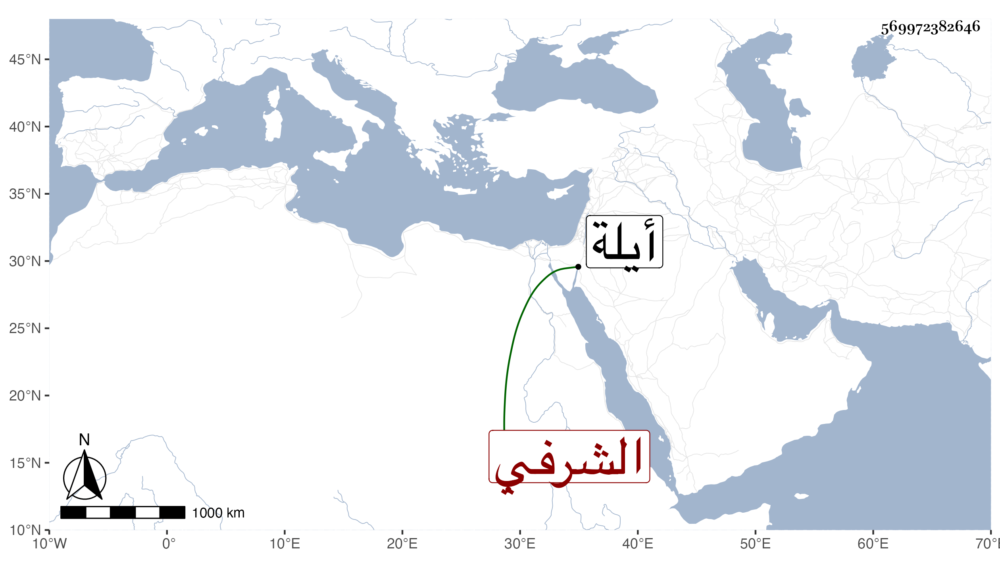

0902Sakhawi.DawLamic.ITO20230111-ara1.EIS1600.569972382646
Biography ID: 569972382646
729
خليل بن أحمد بن أرغون شاه الشرفي شعبان بن حسين ، كان جده مقدما عنده ممن قتل حين رجع معه من عقبة إيلة سنة ثمان وسبعين وسبعمائة وولد له ابنه أحمد بعد قتله كما تقدم ثم كان مولد هذا في سنة تسع وعشرين وثمانمائة وأمه ابنة نائب عنتاب ونشأ فقرأ وحضر عند بعض المشايخ وفي عدة مواعيد وهو بحارة عبد الباسط ، وكانت أخته زوجا للناصري محمد بن الظاهر جقمق ولذا كان حاضرا كيف صار أبوه سلطانا وشرح لي ذلك على وجه مفيد .
